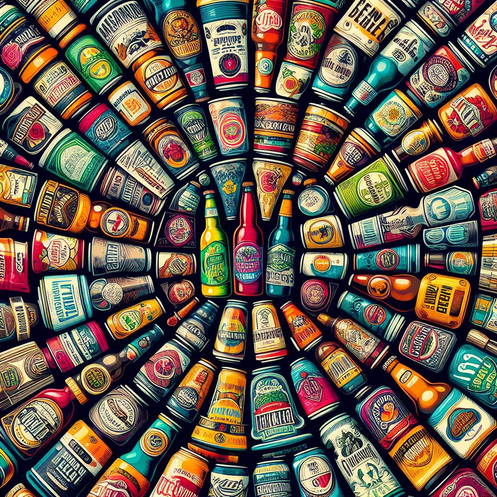

Propiedades para ajustar la representación de imágenes, fondos o bordes y formato de imagen vectorial 2D
basado en una sintaxis de XML.
Filter
Filter es una propiedad que se usa principalmente en imágenes y que nos permite realizar diferentes
efectos como cambio de color, desenfoque, trabajar con el brillo, etc.
Con muy pocas líneas de código, conseguimos efectos que normalmente se obtienen con un software de
edición de imagenes.
Blur
Aplica un desenfoque Gaussiano a la imagen, el cual consiste en desenfocar una imagen mediante una
función Gaussiana. El efecto mezcla ligeramente el color de los pixeles que estén vecinos el uno del
otro en un mapa de
bits (imagen). El efecto es similar al de una fotografía desenfocada.
Sintaxis
filter: blur(px);
Solo admite un parámetro:
radio: define cuántos píxeles en la pantalla se combinan entre sí.
Ejemplo:
filter: blur(5px);
filter: blur(40px);

Brightness
Aplica una multiplicación lineal a la imagen, haciendo que parezca más o menos brillante. Un valor de
0% convertirá la imagen completamente a negro. Un valor de 100% no producirá ningún cambio en la
imagen.
Sintaxis
filter: brightness(%);
Solo admite un parámetro:
porcentaje: define el porcentaje de brillo aplicado a la imagen.
Ejemplo:
filter: brightness(20%);
filter: brightness(70%);
Contrast
Ajusta el contraste de la imagen. Un valor de 0% convertirá la imagen completamente a negro. Un valor
de 100% no producirá ningún cambio en la imagen.
Sintaxis
filter: contrast(%)
Solo admite un solo parametro:
porcentaje: Define el porcentaje de contraste aplicado a la imagen.
Ejemplo:
filter: contrast(20%);
filter: contrast(70%);
Drop-shadow
Aplica un efecto de sombra sobre la imagen.
Sintaxis
filter: drop-shadow(px)
Algunas de sus propiedades son:
h-shadow: especifica la distancia horizontal en la que se va a aplicar la sombra
sobre la
imagen. Es requerido.
y-shadow: especifica la distancia vertical en la que se va a aplicar la sombra
sobre la imagen.
Es requerido.
blur-radius: ajusta desenfoque. Cuanto mayor es el desenfoque, más grande y clara
la sombra. Es opcional.
spread-radius: ajusta el tamaño de la sombra, por defecto se ajusta la imagen.
Opcional.
porcentaje: define el porcentaje de la conversión.
Ejemplo:
filter: grayscale(40%);
filter: grayscale(60%);
Hue-rotate
Aplica una rotación de tono (matiz) al elemento.
Sintaxis
filter: hue-rotate(deg)
Solo admite un parámetro:
grados: define el número de grados alrededor del círculo de colores al que se
ajustarán los
colores de la imagen. El valor por defecto es 0. El valor máximo es 360.